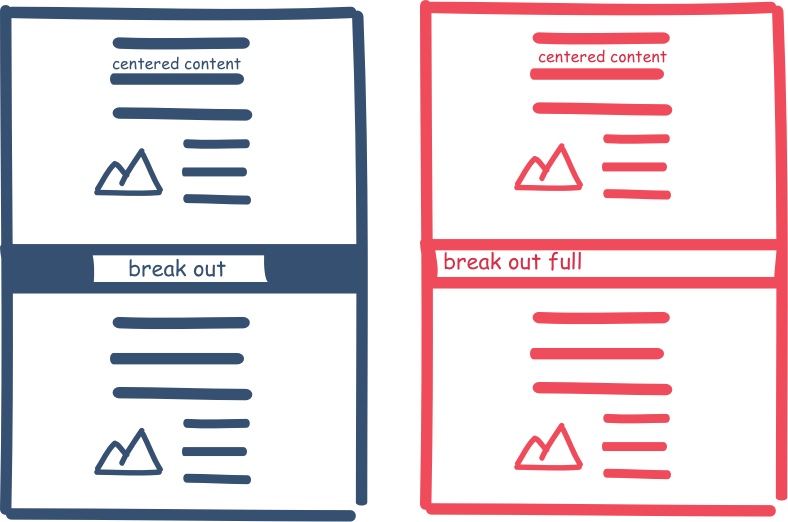

The Gist
By importing a simple snippet of code you will gaining access to a simple grid and some helpful classes of awesomeness!
The grid is simple and easy to use and wont have you bashing your head against the wall! Click 'How to import' to see how simple it is.
//copy the sea-salt-grid.scss file to your sass directory.
//import the file
@import "sea-salt-grid";
//sea salt grid was created with underscores, a wordpress starting theme, in mind.
//if you are not using underscores, you will need to load extra classes and normalize.css
//this is done by including this:
@include no-underscores;
The Variables
Sea Salt Grid comes with a few variables that you can change easily.
Make sure you change the variables you want before importing the sea salt grid file.
These variables will be explained further on this page.
//you can change any of these variables
$wrap: 1200px; //controls the max-width of the website when its inside class wrap. It's also centered.
All these sections on this site are inside one giant class of .wrap
$gutters: 15px; //controls the gutters (padding) on columns.
$footer-height: 25px; //controls the fixed height of your footer. important if you care about sticky footers.
$content-column: 600px; //max-width of a centered column great for main text of a post. This and wrap have special break-out abilities explained further on.
$mobile-width: 500px; //controls the only media query included and when that mobile break point occurs, all columns go 100% width.
$baseline: 1.5rem; //the margin bottom used on columns and other elements
@import "sea-salt-grid";
The Columns
All Columns have 15 pixels of padding on both sides. When two columns come together, they make a 30 pixel gutter. A column uses classes that don’t require too much thinking! col-1-2 is a column half the size of its container.
<div class="col-1-3 box">
<p>hello. I am one third of the layout. I am perfectly centered.</p>
</div>
<div class="col-1-3 box">
<p>hello. I am one third of the layout. I am perfectly centered.</p>
</div>
<div class="col-1-3 box">
<p>hello. I am one third of the layout. I am perfectly centered.</p>
</div>
<!-- using nested columns. put .has-inner-cols on outter column -->
<div class="col-1-2 has-inner-cols">
<div class="col-1-3">
<p class="box">I am one third inside one half</p>
</div>
<div class="col-1-3">
<p class="box">I am one third inside one half</p>
</div>
<div class="col-1-3">
<p class="box">I am one third inside one half</p>
</div>
</div>
<div class="col-1-2">
<p class="box">I am the last half</p>
</div>
hello. I am one third of the layout. I am perfectly centered.
hello. I am one third of the layout. I am perfectly centered.
hello. I am one third of the layout. I am perfectly centered.
I am one third inside one half
I am one third inside one half
I am one third inside one half
I am the last half
html5 structure
The structure is very flexible. Only three classes are mandatory to add to your code.
#page - holds everything inside body. Important for break outs.
.site-content - right inside #page. Holds everything except footer
.site-footer - Also right inside #page, under .site-content. Holds footer.
This structure gives you the ability to have break outs and have a sticky footer.
<!doctype html>
<html lang="en">
<head>
<meta charset="UTF-8" />
<title>title</title>
</head>
<body>
<div id="page">
<div class="site-content">
anything here... usually a .site-header then a main maybe with class .wrap
</div>
<div class="site-footer">
anything here...
</div>
</div>
<!-- end #page -->
</body>
</html>
Note: If you are using underscores and want the sticky footer to work right, open header.php and take the last line, which is the .site-content div, and move it up to right on top of the header. You are all set!
Break outs
So you have decided to write a post and suddenly you want to have a full width section. But your stuck inside wrap or a small centered section.
Its messy and not great to have to close the wrap or even the article to create a full width section, just to reopen the article and continue.
Have no fear! Break outs are here! With a class of .break-out you can have a full width background and continue having centered content within.
.Break-out-full will give you the full width even for your content.
//you are inside a break-out right now!!
//all the sections on this page are inside one large .wrap
//instead of closing the wrap I created this:
<div>
It is important to put EVERYTHING inside an inner div in the break out.
Don't put anything outside this div or you wont see it!
For more information on how this works you can visit this post.
http://modusagency.com/css-trick-expanding-a-div-beyond-a-parent-container/
This is what it is based on.
.break-out and .break-out-full currently work on .wrap and .content-column. Regular columns do not have this ability. I didn't think anyone was popping out of a col-1-3....
I use .content-column when creating an article usually as its smaller than wrap and meant for lines of text.
</div>
</div>
Helpful Classes
Some helpful classes and mixins are available to help you out.
For anything else, feel free to contact me on twitter
Classes:
A lot of these classes can be put in the html or use @extend inside the sass to use them.
.right-col: makes a column float right instead of left
.m0: gives a margin bottom of 0 to things that normally would have a margin-bottom, like columns
.transitions: gives basic transitions of all .5s
.no-list: Use on a ul. Gets rid of list styles. Useful for menus
.row: Can surround columns. Lets you start a new set of columns even if the last set didn't equal 100%.
.hide, .hidden sets to display: none
.center-text | .right-text: centers text. .right-text aligns to the right.
.gutters: Gives 15px padding to right and left. This is already on columns.
.full-gutters: Gives gutters all around, not just to sides.
.no-outer-gutters: Put on div surrounding columns, like a .row. This will get rid of outer gutters of first and last column, so the edges of the columns butt up against the viewport or whatever div they are in.
.stay-on-mobile: This column wont go full width on mobile.
.aligncenter | .alignnone: Centers and makes sure there is no float.
Mixins
retina background image: @include image-2x($retina-image, $width-of-original, $height-of-original) --by Jason Zimdars
Deep shadow: @include deep-shadow($number, $color)
tint and shade a color: shade($color, $percentage) , tint($color, $percentage)